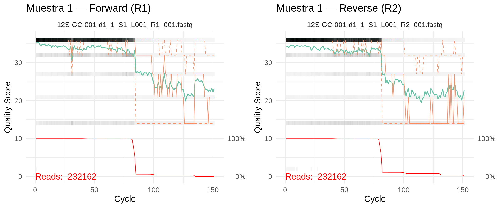

Cargamos las librerías que usaremos a lo largo del pipeline:
Código
library(dada2, quietly =TRUE) # pipeline principal: ASVs, filtrado, errores, taxonomíalibrary(tidyverse, quietly =TRUE) # manipulación y visualización de datoslibrary(seqinr) # utilidades para secuencias FASTAlibrary(ShortRead) # lectura y QC de archivos FASTQlibrary(fs) # operaciones con archivos y rutaslibrary(readr) # lectura/escritura de CSVsset.seed(42)
Si no hay errores, todas las librerías están disponibles en el servidor.
Definir rutas y parámetros
Definimos las rutas principales del proyecto. Todas son relativas a ~/metabarcoding-code/, que es el directorio de trabajo.
i selecciona qué locus procesar. Si tienes varios marcadores (ej. 12S y COI), cambia este valor para procesar cada uno
run_name genera un prefijo único con la fecha y hora (ej. 20260325_1430) para que cada corrida produzca archivos distintos y no se sobreescriban
Leer parámetros del locus
El pipeline lee primer_data.csv para obtener la configuración específica del marcador: nombre del locus, longitud máxima de truncamiento, base de datos taxonómica, etc. Esto permite procesar diferentes marcadores con el mismo script, solo cambiando el valor de i.
Verifica que la fila i corresponde al locus que quieres analizar. El pipeline usará primer.data$locus_shorthand[i], primer.data$db_name[i], etc. en todos los pasos siguientes.
Localizar archivos FASTQ
El script busca en for_dada2/ todos los archivos FASTQ que contengan el nombre del locus seleccionado. Separa las lecturas forward (R1) y reverse (R2), y extrae el identificador de muestra (sample_id) del nombre del archivo.
Por ejemplo, del archivo 12S-GC-001-d1_1_S1_L001_R1_001.fastq extrae GC-001 como identificador de muestra.
Deberías ver el número total de muestras y los primeros nombres. Si el número no coincide con lo esperado, revisa que los archivos estén en for_dada2/ y que el locus_shorthand en primer_data.csv sea correcto.
Preparar rutas de archivos filtrados
Antes de filtrar, definimos dónde se guardarán los archivos filtrados (en for_dada2/filtered/) y eliminamos del análisis cualquier archivo vacío o corrupto que podría causar errores en pasos posteriores.
Antes de decidir dónde truncar, visualizamos los perfiles de calidad. Estas gráficas muestran cómo varía la calidad Phred (Q) a lo largo de la lectura — típicamente la calidad es alta al inicio y decae hacia el final, especialmente en las lecturas reverse (R2).
Las gráficas se guardan como PNG porque en el servidor no hay pantalla gráfica:
Ejemplo de la gráfica paired (Muestra 1, Forward vs Reverse):

Perfiles de calidad — Muestra 1
Tip
Cómo leer las gráficas:
La línea verde es la mediana de calidad por posición
La zona gris muestra los cuartiles (variabilidad entre lecturas)
La línea roja (eje derecho) muestra el porcentaje de lecturas que llegan a esa posición — cuando cae a 0%, las lecturas ya terminaron
Busca dónde la mediana cae por debajo de Q30 — ese es el punto de truncamiento ideal
Las lecturas R2 suelen degradar más rápido que R1; es normal que su punto de truncamiento sea menor
Distribución de longitudes de lecturas
Este diagnóstico permite detectar problemas de secuenciación como mezclas inesperadas de longitudes o lecturas truncadas prematuramente.
Código
PLOT_RAW_LENGTHS <-TRUE# cambiar a FALSE para saltar este pasoif (PLOT_RAW_LENGTHS) { sample_n_reads <-100000 get_lengths <-function(fq_file, n = sample_n_reads) { streamer <- ShortRead::FastqStreamer(fq_file, n = n)on.exit(close(streamer)) chunk <- ShortRead::yield(streamer)if (length(chunk) ==0) return(integer(0)) ShortRead::width(ShortRead::sread(chunk)) } lengths_F <- purrr::map_df(fnFs, ~ tibble::tibble(ReadType ="Forward", File =basename(.x), Length =get_lengths(.x))) lengths_R <- purrr::map_df(fnRs, ~ tibble::tibble(ReadType ="Reverse", File =basename(.x), Length =get_lengths(.x))) lengths_all <- dplyr::bind_rows(lengths_F, lengths_R)png(file.path(output_location, "logs",paste0(run_name, "_", primer.data$locus_shorthand[i], "_raw_read_lengths.png")),width =2000, height =1200, res =300)print( ggplot2::ggplot(lengths_all, ggplot2::aes(x = Length, fill = ReadType)) + ggplot2::geom_histogram(alpha =0.6, position ="identity", binwidth =1, color ="black") + ggplot2::facet_wrap(~ ReadType, ncol =1, scales ="free_y") + ggplot2::scale_x_continuous(breaks =seq(0, max(lengths_all$Length, na.rm =TRUE), by =10)) + ggplot2::labs(title ="Distribución de longitudes de lecturas crudas",x ="Longitud (bp)", y ="Frecuencia") + ggplot2::theme_minimal() + ggplot2::theme(axis.text.x = ggplot2::element_text(angle =90, vjust =0.5, size =7)) )dev.off()}
Tip
¿Qué buscar en la gráfica? Lo normal es ver un pico concentrado en una sola longitud (la longitud completa de la lectura). Si ves múltiples picos o una distribución muy dispersa, puede indicar problemas en la secuenciación o mezcla de librerías con diferentes longitudes.
Verificación de primers
Verificamos que los primers hayan sido removidos correctamente por Cutadapt. Si siguen presentes, DADA2 los interpretará como parte de la secuencia biológica y afectará el análisis.
Código
library(Biostrings)check_primers <-function(fastq_file, primer_seq, n =1000) { streamer <- ShortRead::FastqStreamer(fastq_file, n = n)on.exit(close(streamer)) chunk <- ShortRead::yield(streamer) seqs <-as.character(ShortRead::sread(chunk)) exact_match <-sum(grepl(paste0("^", primer_seq), seqs)) substr_seqs <-substr(seqs, 1, 50) anywhere_match <-sum(grepl(primer_seq, substr_seqs))list(exact = exact_match, anywhere = anywhere_match, total =length(seqs))}# Secuencias de primers (ajustar según tu marcador)primer_F <-"TTAGATACCCCACTATGC"# ejemplo 12Sprimer_R <-"TAGAACAGGCTCCTCTAG"# ejemplo 12S# Verificar en R1 (forward)check_F_in_R1 <-check_primers(fnFs[1], primer_F)check_R_RC_in_R1 <-check_primers(fnFs[1], as.character( Biostrings::reverseComplement(Biostrings::DNAString(primer_R))))# Verificar en R2 (reverse)check_R_in_R2 <-check_primers(fnRs[1], primer_R)check_F_RC_in_R2 <-check_primers(fnRs[1], as.character( Biostrings::reverseComplement(Biostrings::DNAString(primer_F))))message("R1 — Primer F al inicio: ", check_F_in_R1$exact, "/", check_F_in_R1$total)message("R1 — Primer R-RC al inicio: ", check_R_RC_in_R1$exact, "/", check_R_RC_in_R1$total)message("R2 — Primer R al inicio: ", check_R_in_R2$exact, "/", check_R_in_R2$total)message("R2 — Primer F-RC al inicio: ", check_F_RC_in_R2$exact, "/", check_F_RC_in_R2$total)
Nota
Interpretación:
Si los conteos son 0 o cercanos a 0: Cutadapt removió los primers correctamente. Esto es lo esperado.
Si los conteos son altos (cercanos al total): los primers no fueron removidos. Revisa la configuración de Cutadapt o las secuencias de primer en primer_data.csv.
Determinar el punto de truncamiento
Ahora que vimos las gráficas de calidad, necesitamos decidir dónde truncar las lecturas. Esta es una de las decisiones más importantes del pipeline porque afecta directamente la calidad de las ASVs que obtendremos.
¿Qué observamos en nuestras gráficas?
En nuestros datos del marcador 12S, notamos que:
La calidad se mantiene alta (Q > 30) durante las primeras ~65 bases
Alrededor de las 80–90 bases, la proporción de lecturas cae a 0% — esto significa que las lecturas terminan ahí, no que pierdan calidad
Esto tiene sentido: nuestro amplicón mide ~65 bp (sin primers, que ya fueron removidos por Cutadapt). Después del amplicón, el secuenciador sigue leyendo pero ya no hay secuencia biológica
Paso 1: Truncamiento por calidad
Primero calculamos el punto donde la calidad empieza a degradarse. El script usa una ventana móvil de 10 posiciones: recorre la calidad mediana de cada muestra y marca dónde la calidad promedio cae por debajo de Q30. Luego toma la mediana entre todas las muestras como valor global.
Observa los valores que obtienes. En nuestro caso, probablemente serán mayores que 65 — el algoritmo detecta dónde cae la calidad, pero no sabe que nuestro amplicón es más corto que eso.
Paso 2: Ajuste por longitud del amplicón
El truncamiento por calidad nos da un límite superior, pero no tiene sentido truncar más allá de donde termina el amplicón. Si el cálculo dice “truncar a 90 bp” pero nuestro amplicón solo tiene 65 bp, las bases 66–90 no son secuencia biológica — son cola del secuenciador.
Por eso ajustamos: el truncamiento final es el menor entre el valor por calidad y la longitud del amplicón.
overlap <- where_trim_all_Fs + where_trim_all_Rs - amp_lengthmessage("Solapamiento esperado: ", overlap, " bp")if (overlap <12) {stop("Solapamiento < 12 bp. El merge fallará. Aumenta truncLen o revisa el marcador.")} elseif (overlap <20) {warning("Solapamiento < 20 bp. El merge puede ser inestable.")} else {message("Solapamiento suficiente para el merge.")}
¿Qué pasaría con otros marcadores?
La decisión de truncamiento cambia según la longitud del amplicón. Veamos cómo se comporta con marcadores de diferente tamaño:
Marcador
Amplicón
truncLen F/R
Solapamiento
Situación
12S (nuestros datos)
~65 bp
65 / 65
65 bp
Solapamiento total — ideal
16S
~150 bp
140 / 130
120 bp
Amplio solapamiento
COI
~313 bp
250 / 200
137 bp
Buen solapamiento
COI (calidad baja)
~313 bp
200 / 150
37 bp
Ajustado pero funcional
COI (muy recortado)
~313 bp
150 / 120
-43 bp
No hay solapamiento — el merge falla
ITS / 18S
~500 bp
250 / 250
0 bp
No hay solapamiento — imposible con lecturas de 2×250
ITS / 18S (solo forward)
~500 bp
250 / —
—
Se usa solo R1 sin merge, se pierde resolución
Nota
Con amplicones cortos (como nuestro 12S de ~65 bp), el truncamiento está determinado por la longitud del amplicón, no por la calidad — las lecturas son tan cortas que la calidad se mantiene alta durante todo el amplicón.
Con amplicones medianos (como COI de ~313 bp), el truncamiento está determinado por la calidad — hay que buscar el balance entre quitar bases de baja calidad y mantener suficiente solapamiento para el merge.
Con amplicones largos (como ITS o 18S de ~500 bp), las lecturas paired-end de Illumina (2×150 o 2×250 bp) no alcanzan a solaparse. En estos casos se trabaja solo con la lectura forward, sin merge, lo que reduce la resolución taxonómica. Una alternativa es usar plataformas de lectura larga (PacBio, Nanopore) o elegir un marcador más corto.
Filtrado y truncamiento (filterAndTrim)
Este es el paso central. filterAndTrim() aplica varios filtros simultáneamente a cada par de lecturas:
Trunca cada lectura a la longitud especificada. El primer valor es para forward (R1), el segundo para reverse (R2). Los valores where_trim_all_Fs y where_trim_all_Rs se calcularon automáticamente en el paso anterior. Si prefieres ajustarlos manualmente, puedes reemplazarlos por valores fijos (ej. c(120, 100)).
maxN — Bases ambiguas
Número máximo de bases N (ambiguas) permitidas por lectura. DADA2 requiere que sea 0 — no puede modelar errores en posiciones ambiguas. Si una lectura tiene al menos una N, se descarta.
maxEE — Errores esperados
Es el filtro más importante después de truncLen. Define el máximo de errores esperados permitidos por lectura. Se calcula sumando las probabilidades de error de cada base:
EE = Σ 10^(-Q/10)
Por ejemplo, una lectura de 100 bases todas con Q30 tiene EE = 100 × 0.001 = 0.1. Una lectura con varias bases de Q10–Q15 acumula errores rápidamente.
maxEE
Qué filtra
1
Muy estricto — solo lecturas de alta calidad
2
Valor recomendado — buen balance entre calidad y retención
5
Más permisivo — útil si la retención es muy baja
Tip
maxEE es mejor que un umbral de calidad fijo (como “descartar si Q < 20”) porque considera la calidad acumulada de todas las bases, no solo la peor.
truncQ — Truncamiento por calidad
Si una base individual tiene calidad menor a este valor, la lectura se trunca en ese punto. Con truncQ = 2, solo bases extremadamente malas (Q ≤ 2, >60% de probabilidad de error) causan truncamiento. En la práctica, truncLen hace la mayor parte del trabajo y truncQ actúa como red de seguridad.
rm.phix — Control PhiX
Illumina agrega lecturas del genoma PhiX como control interno de calidad en cada corrida. Estas lecturas no son biológicas y deben eliminarse.
matchIDs — Pareado de lecturas
Asegura que cada lectura forward tenga su par reverse correspondiente. Si una lectura R1 pasa los filtros pero su R2 no (o viceversa), ambas se descartan. DADA2 necesita los pares completos para el merge.
Verificar retención
Después de filtrar, revisamos qué porcentaje de lecturas pasó todos los filtros:
¿Retención baja en todas las muestras? Lo más común es que truncLen sea demasiado corto. Prueba aumentándolo y verifica que la calidad sea aceptable en las gráficas.
¿Retención baja en pocas muestras? Probablemente son muestras con problemas de secuenciación. Revísalas individualmente con FastQC antes de decidir si excluirlas.
Guardar checkpoint
El pipeline guarda un checkpoint después del filtrado. Esto permite reanudar el análisis desde este punto sin repetir el filtrado — útil si necesitas ajustar parámetros en pasos posteriores o si la sesión se interrumpe.